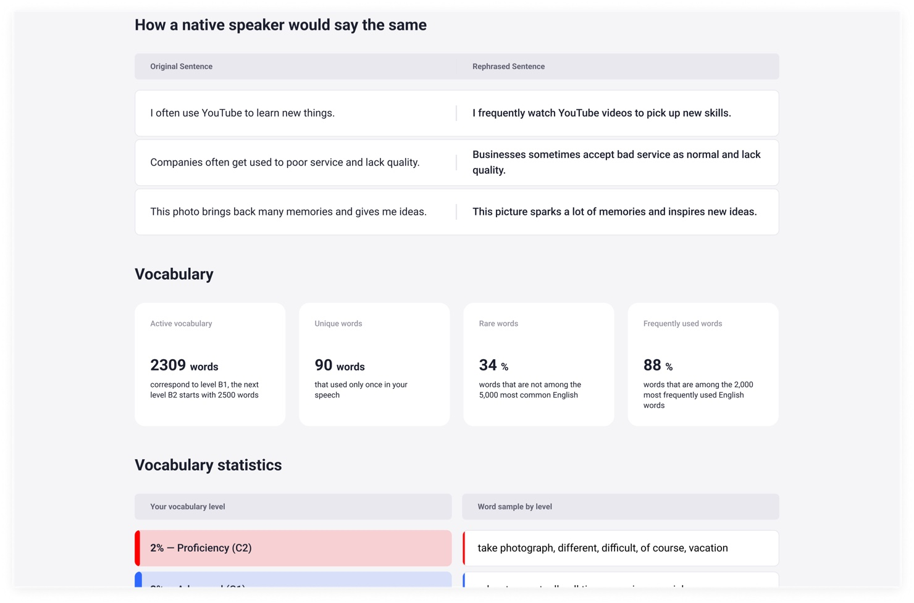
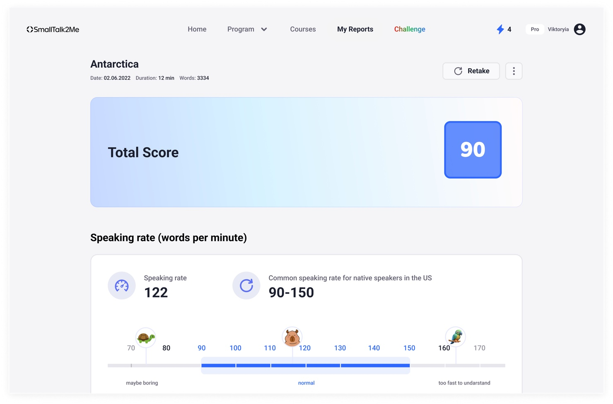
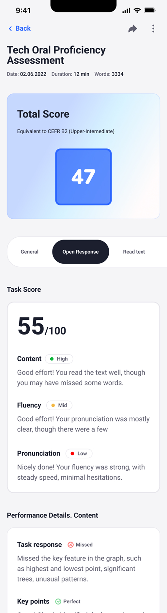
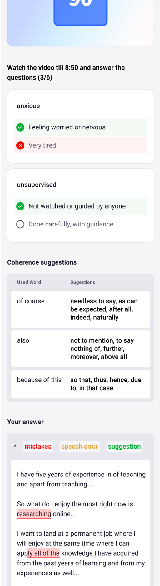

25 parameters. One report anyone can read.
SmallTalk2Me is an AI-powered English speaking platform serving 2.5M+ learners across 125 countries. After every speaking session, the AI engine evaluates the user across 25 linguistic parameters — pronunciation, fluency, vocabulary, coherence, grammar — and generates a CEFR proficiency score.
The data was rich. The problem was presentation. Raw scores across 25 dimensions mean nothing to a learner who just wants to improve, or an HR manager who needs to decide whether a candidate is ready for a client-facing role. I was brought in to design the reports layer: the interface that turns AI output into something people can understand, trust, and act on — on both web and mobile, for individual learners and B2B clients alike.

Data without meaning is noise
The AI engine produced exceptional signal — 25 measured parameters per session, covering everything from speaking rate and vocabulary rarity to coherence patterns and pronunciation accuracy. But none of it was designed to be read by humans.
The challenge wasn't building a dashboard — it was deciding what to show, what to hide, how to sequence information so the most important insight lands first, and how to frame AI-generated feedback so it feels useful rather than clinical.
Designing for two mental models at once
Interviewed both learner-side users and B2B account managers. Learners wanted to understand specific mistakes and know what to practice next. Managers needed a quick confidence signal — is this person at the right level? The two goals required different visual hierarchies.
Grouped 25 raw parameters into 4 readable dimensions: Fluency, Pronunciation, Vocabulary, and Coherence. Each dimension gets a score and a plain-language descriptor. The total CEFR score leads — everything else supports it.
Designed the vocabulary section to show not just stats, but AI-generated alternatives — "how a native speaker would say the same thing." Coherence suggestions surface overused connectors with richer alternatives. This turned passive data into active guidance.
Designed a custom scale for speaking rate (words per minute) placed on a contextual range — from "maybe boring" to "too fast to understand" — so the number has immediate meaning without needing explanation.
Designed the full mobile report experience — score summary, CEFR badge, per-dimension breakdowns, annotated transcript with colour-coded mistake categories (mistake · speech error · suggestion). Validated with prototype testing before dev handoff.

A report that explains itself
The final Reports System works across web and mobile for both individual learners and B2B HR managers viewing employee results. Every report is structured the same way:
- Score + CEFR level — the primary signal, always at the top. Instantly answers "how good is this person's English?"
- Four dimensions — Fluency, Pronunciation, Vocabulary, Coherence — each scored separately with a plain-language label so non-linguists understand what they're reading
- Speaking rate scale — words per minute shown on a contextual range with human anchors, not just a number
- AI rephrasing — side-by-side: what the user said vs. how a native speaker would phrase it
- Annotated transcript — the user's actual text with colour-coded labels: mistakes, speech errors, suggestions
- Coherence suggestions — overused connectors replaced with richer, more natural alternatives


Complex AI output — zero explanation needed
The AI rephrasing and annotated transcript features became the most-engaged sections of the report — learners spent the most time there because they got specific, actionable guidance rather than abstract scores. For B2B clients, the CEFR badge and dimension breakdown gave HR managers a hiring-ready signal they could share with stakeholders without needing to interpret anything.